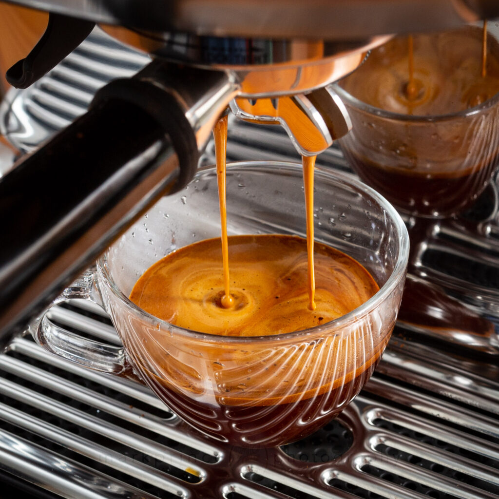

Recipe: Americano

Nothing beats a good ol' cup of coffee first thing in the morning!
Ingredients:
- 20g coffee beans
- 1 coffee grinder
- 1 espresso machine
- 1 portafilter
- 150ml water
- 200g ice
Steps
- Grind the coffee beans using the coffee grinder to fineness of your liking
- Transfer the grinded beans to your espresso machine
- Extract the espresso (prefertably within 27-32 seconds range)
- Pour extracted espresso into a cup
- Add 150ml water and ice
Back to Home